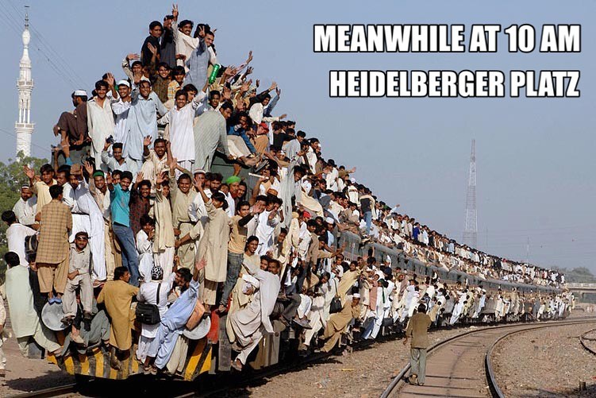

Wer routet so spät durch Nacht und Wind?
Es ist der Router, er routet geschwind!
Bald routet er hier, bald routet er dort
Jedoch die Pakete, sie kommen nicht fort.
Sie sammeln und drängeln sich, warten recht lange
in einer zu niedrig priorisierten Schlange.
Die Schlangen sind voll, der Router im Stress,
da meldet sich vorlaut der Routingprozess
und ruft "All Ihr Päckchen, Ihr sorgt Euch zu viel,
nicht der IP-Host, nein, der Weg ist das Ziel!"
Es komme gar bald einem jeden zu Gute
eine sorgsam geplante und loopfreie Route.
void sendError(int connFd) {
char error[] = "HTTP/1.1 404 Not Found\r\nContent-Type: text/html\r\nContent-Length: 20\r\nConnection: close\r\n\r\n404: File not found.";
send(connFd, error, sizeof(error), 0);
}ückweg, das Blickfeld gespalten,
mit RIP wird die Welt nur zum Narren gehalten.
Doch OSPF durchsucht schnell und bequem
Mein ganz und gar autonomes System.
Für kunstvolle Routen, das vergesst bitte nie,
benötigt man Kenntnis der Topologie.
Zu überraschungs- und Managementzwecken
durchsuch' ich mit RMON die hintersten Ecken.
Kein Winkel des Netzes bleibt vor mir verborgen,
mit SNMP kann ich alles besorgen.
Wohlan nun, Ihr Päckchen, die Reise beginnt,
Mit jeder Station Eure Lebenszeit rinnt.
Doch halt, Ihr Päckchen, bevor ichs vergesse:
Besorgt euch mit NAT eine neue Adresse!"
"Mein Router, mein Router, was wird mir so bang!
Der Weg durch das WAN ist gefährlich und lang."
"Mein Päckchen, mein Päckchen, so fürchte Dich nicht,
denn über Dich wacht eine Sicherungsschicht."
"Mein Router, mein Router, was wird mir so flau!
Dort draussen am LAN-Port, da wartet die MAU!"

"Mein Päckchen, mein Päckchen Dir droht nicht der Tod,
denn über Dich wacht ja der Manchester-Code.
Doch halte dich fern von der flammenden Mauer.
Die sorgt selbst bei mir noch für ängstliche Schauer."
"Mein Router, mein Router, wie glänzt dort voll Tücke
der schmale und schlüpfrige Weg auf der Brücke."
"Oh weh! Das Netz ist mit Broadcasts geflutet.
Ach hätt' ich doch niemals zur Brücke geroutet!
Mein Päckchen, den Kopf hoch, Du musst nicht verzagen,
an Dich wird sich niemals ein Bitfehler wagen."
Schnell wie der Wind geht die Reise nun weiter
durch helle und funkelnde Lichtwellenleiter.
"Mein Päckchen, mein Päckchen, willst Du mit mir gehen?
Die Wunder des Frame-Relay-Netzes ansehen?"
"Mein Router, mein Router, ja hörst Du denn nicht,
was die WAN-Wolke lockend mir leise verspricht?"
"Glaub mir, mein Päckchen, im LAN, da entgeht
Dir sowieso Lebens- und Dienstqualität.
Reise nur weiter ganz ruhig und sacht
Quer durchs ATM-Netz mit FRF.8 ."
"Mein Router, mein Router, man hat mich verführt,
zerlegt, verschaltet und rekombiniert!"
"Mein Päckchen, das macht nichts, nun sparen wir viel,
ein VPN-Tunnel, der bringt Dich ans Ziel.
DiffSERV und TOS-Feld, merk' Dir die Worte,
die öffnen zu jedem Router die Pforte."
Finster der Tunnel, die Bandbreite knapp,
wie schön war die Backplane im eigenen Hub.
Am Ende des Tunnels: Das Päckchen ist weg,
vernichtet vom Cyclic Redundancy Check.
- geklaut aus dem heise Forum.